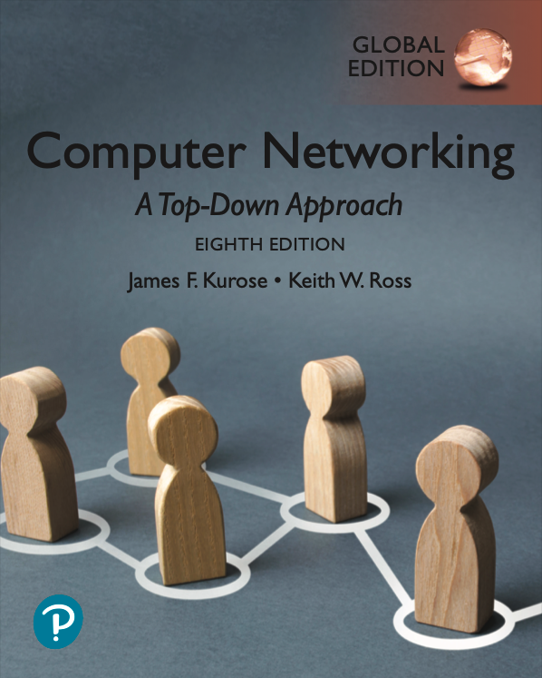
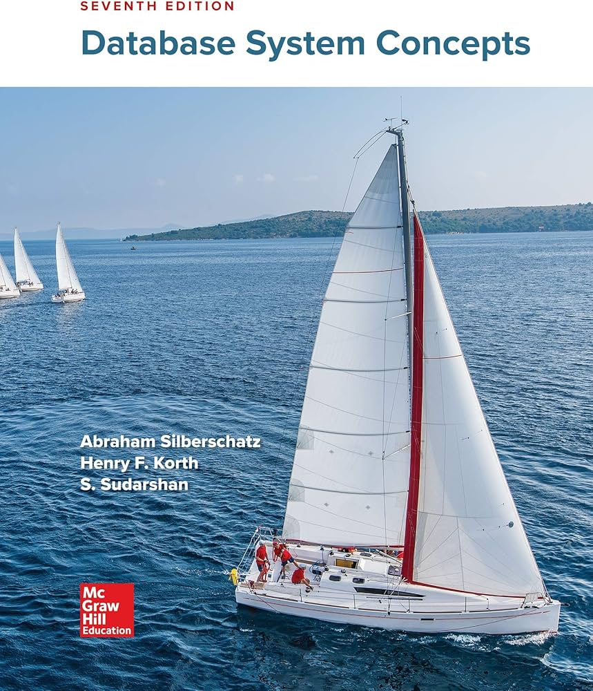
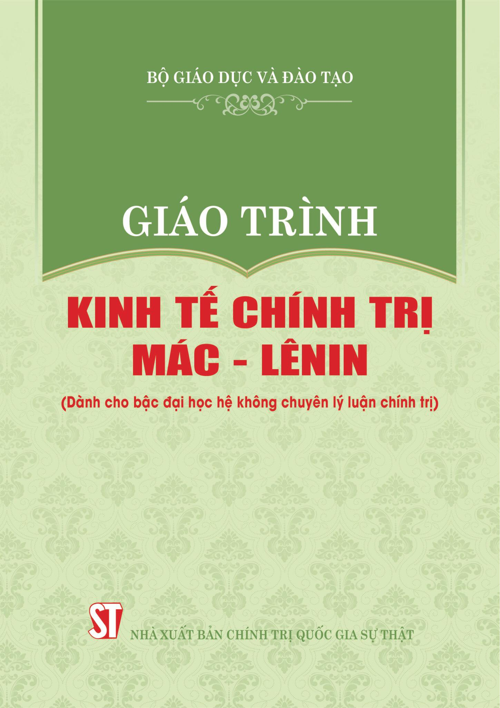

Tủ sách yêu thích
Dưới đây là 3 cuốn sách đã ảnh hưởng lớn đến tư duy lập trình và kiến thức của mình.
-
1. Computer Networking: A Top-Down Approach

Tác giả: James F. Kurose, Keith W. Ross
Cảm nhận: Cuốn sách "gối đầu giường" về mạng máy tính. Nó giúp mình hiểu rõ cách dữ liệu di chuyển từ tầng Application xuống Physical theo mô hình OSI một cách rất trực quan.
-
2. Database System Concepts

Tác giả: Abraham Silberschatz
Cảm nhận: Tài liệu tuyệt vời để học về chuẩn hóa dữ liệu (Normalization) và các kỹ thuật tối ưu hóa câu truy vấn SQL. Rất hữu ích cho các dự án quản lý mà mình đang làm.
-
3. Giáo trình Kinh tế Chính trị Mác - Lênin

Tác giả: Bộ Giáo dục và Đào tạo
Cảm nhận: Môn học giúp mình có cái nhìn biện chứng về mối quan hệ giữa sản xuất, hàng hóa và thị trường. Những nguyên lý này rất thú vị khi áp dụng để phân tích các mô hình kinh doanh hiện đại.